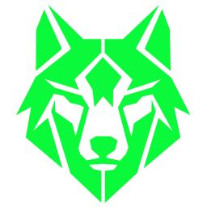
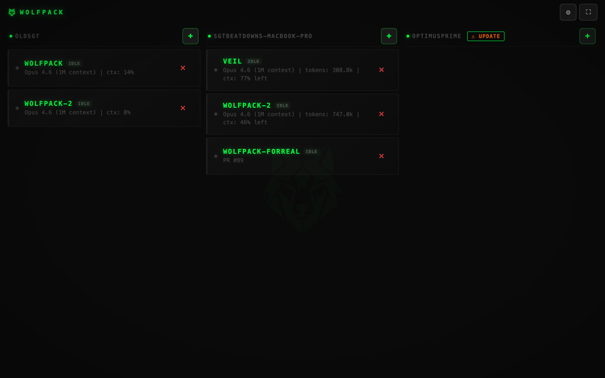

01
Run it where the work is
Install beside your existing tools. Your projects, credentials, terminals, and agents stay on your machine.

WOLFPACK Install →Wolfpack keeps long-running Claude Code, Codex, Gemini, and shell sessions within reach—from your laptop, your workstation, or your phone.
$ curl -fsSL raw.githubusercontent.com/.../install.sh | bash
Wolfpack is the missing control layer between your agents and the machines they run on.
Install beside your existing tools. Your projects, credentials, terminals, and agents stay on your machine.
Tailscale gives your machines a private route. No Wolfpack account. No Wolfpack-hosted relay or prompt upload service.
Open the PWA from another machine or your phone. Read output, send input, and keep the loop moving.
Wolfpack is self-hosted software for machines you control. Remote access normally travels through your Tailscale network—not through us.
See every session, project, and machine at a glance. Jump into the terminal when the agent needs you.

Install in minutes. Scan the QR code. Pick up the session from wherever the next thought happens.